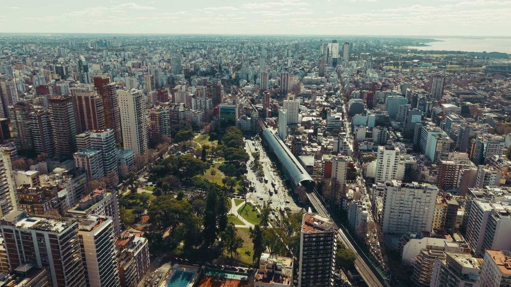
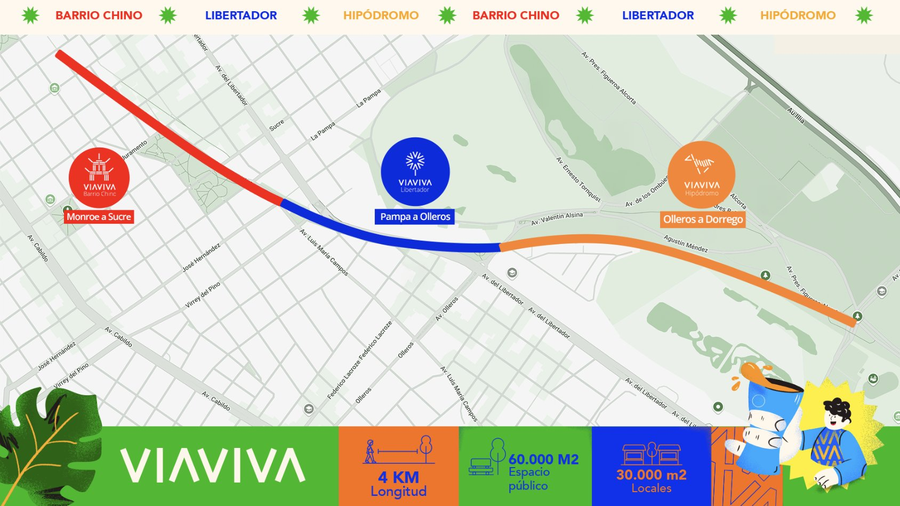

Hoy recorrés VIAVIVA por dentro:cómo se hizo, quién lo hace funcionar y qué viene.

Arriba pasa el tren.Abajo, todo lo demás.
Donde antes la ciudad se cortaba,hoy se encuentra.
VIAVIVA no es un lugar de paso.Es donde te dan ganas de quedarte.
Cada tramo tiene su ritmo.
Cuatro kilómetros y mediode sabores que llegan de lejos,diseño que te sorprende en cada cuadra,música que se escucha desde la esquinay noches que empiezan sin plan.
Vamos a VIAVIVA.
De Monroe a Dorrego, bajo las vías del Mitre:Barrio Chino, Libertador y Hipódromo.

Hasta 2019, el tren pasaba a nivel de la calley partía el barrio en dos.
Con el Viaducto Mitre, las vías subieron y las barreras desaparecieron.Abajo quedó el espacio donde hoy está VIAVIVA.
El tren pasó a ir en altura entre las avenidas Congreso y Dorrego, atravesando Núñez, Belgrano y Palermo.
Monroe, Blanco Encalada, Mendoza, Juramento, Olazábal, Sucre, La Pampa y Olleros ya no tienen barrera. Además, se abrieron 4 calles que antes estaban cortadas por las vías.
Es la suma de todos los que cruzaban o vivían junto a las vías: 100.000 pasajeros por día del ramal Tigre, 30.000 personas que viajaban en colectivos, 70.000 automovilistas y 450.000 vecinos de Núñez, Belgrano y Palermo.
En hora pico, las barreras más complicadas de la ciudad llegaban a estar bajas unos 20 minutos de cada hora. La de Vértiz y La Pampa, sobre este mismo ramal, hasta 35. Sin barreras, se termina esa espera.
El mismo espacio bajo el viaducto: primero, tierra y pastizal; hoy, el lugar para venir a descubrir y disfrutar.
Arrastrá la línea amarilla para comparar.
Para que exista un lugar así hace falta mucha gente distinta.Primero, quienes lo diseñan y lo construyen desde cero.Después, quienes lo hacen funcionar todos los díasy quienes le dan vida con locales, eventos y marcas.
Elegí lo que más te gusta hacer y te marcamos en qué parte de VIAVIVA podrías trabajar.
“VIAVIVA es un paseo a cielo abierto único de 4,5 km bajo las vías del tren Mitre, del Barrio Chino de Belgrano a Palermo, donde siempre hay algo para descubrir.”
Mucha gente lo llama “el Barrio Chino”,pero el Barrio Chino es una parte de VIAVIVA.
Hay tres tramos y cada uno tiene su propio clima.
Próximamente: nuevas aperturas para descubrir.
Tocá un punto del mapa y te llevamos a lo que hay ahí.Es esquemático: muestra el orden de las calles principales, no la escala real.
“Estar en Pampa y la vía” se dice de alguien que se quedó sin un peso. Y viene de este cruce.
Entre 1887 y 1926 funcionó el Hipódromo Nacional, cerca de donde hoy está el estadio de River. Para llevar al público había un tranvía gratuito, y su recorrido terminaba en La Pampa y la vía. Ahí bajaban los apostadores que habían perdido todo en las carreras y tenían que arreglárselas para volver a casa.
Esa barrera fue una de las que eliminó el viaducto: hoy, en La Pampa, pasás por debajo del tren.
10 preguntas sobre todo lo que viste hoy.Gana quien tenga más respuestas correctas y, si hay empate, quien termine más rápido.
Queremos saber qué planes te traerían,con quién vendrías y qué le falta a VIAVIVA para la gente de tu edad.
Son 2 minutos y es anónimo.
Datos del viaducto: Gobierno de la Ciudad de Buenos Aires. Mapa esquemático, no a escala.